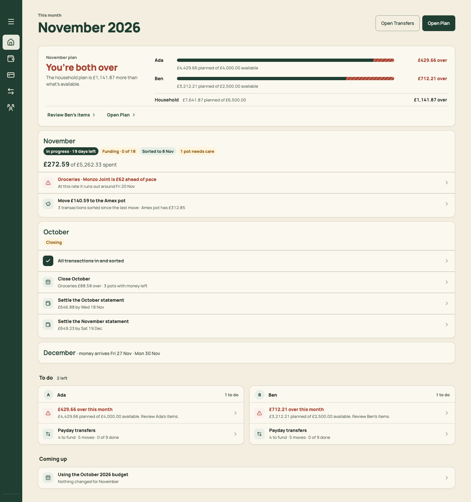

Navigation: four places, ordered by the household's routine
Today's five tabs reflect when each feature was built: Plan, then Transfers, then Household, then Spending, then Home. The month's money is spread across four of them, and settings across three. The target has four destinations that match the jobs: Home (what needs doing), Month (fund it, watch it, close it), Plan (the budget) and Spending (the card). Settings sits at the foot of the sidebar and behind the account button on phones. Fixes F02, F08, F10, F25, F27. Brief: PR 06.
Every old link still works. budgetView=transfers opens Month, spendingView=month opens Month (with its pot or close state), view=household opens Settings › Household, and spendingView=rules opens Settings › Sorting rules.
"Transfers" stays in the glossary as the name for payday steps ("Payday" section) only if you want it. See decision D2 in plan.md.
Desktop sidebar
Before: icon-only by default. Plan is a wallet and Spending a card, with no labels, and the save status hides behind the collapsed rail. After: expanded by default from 1280px, with labels, a count on Home (open tasks) and Spending (to sort), go-to shortcuts, and Settings and the account at the foot. ⌘\ collapses it.
Before

Five unlabelled icons. Household gets a primary slot for two name fields and a card form.
After
Phone tab bar and header
Before: five tabs. The header's right-hand button is a person icon on Home and Spending but ⋯ on Plan and Transfers, so the account sheet is in a different place on each screen. After: four tabs. The account button is always top right and opens Settings, save status and Sign out. A page's own ⋯ sits to its left only when the page has actions.